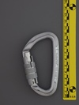
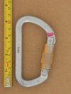
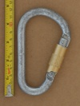
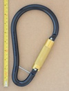
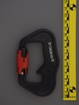
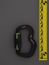
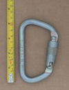
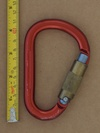
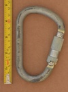
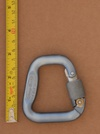

Twist Lock Carabiners
Double action autolocking carabiners, which unlock with a single twisting motion.
| Image | Summary | ||||
|---|---|---|---|---|---|
| Black Diamond Airlock2 Twistlock | HMS | full-auto | twist | basic twistlock from the dawn of the modern era of autolocks | |
|  | CAMP Orbit Twist Lock (wide square knurling) | asymmetric D | full-auto | twist | compact autolocker |
 | Clog (HMS) (twistlock) | HMS | full-auto | twist | early twistlock from originator of the twistlock |
 | Clog (twistlock D) (diagonal knurling - 2500) | asymmetric D | full-auto | twist | early twistlock, possibly even the first twistlock model |
 | Clog (twistlock D) (straight knurling 120 deg throw) | asymmetric D | full-auto | twist | early twistlock from originator of the twistlock |
|  | Clog (twistlock D) (straight knurling 90 deg throw) | asymmetric D | full-auto | twist | early twistlock from originator of the twistlock |
|  | Clog (twistlock HMS) (Climb High) | HMS | full-auto | twist | early twistlock from originator of the twistlock |
| DMM Klettersteig (kwicklock) | HMS | full-auto | twist | large D / HMS twistlock | |
|  | DMM Scaffolder | S-spine | full-auto | twist | extra large aluminum carabiner for use on ladders and scaffolds |
 | DMM Ultima Scaffold Hook ANSI Kwiklock | S-spine | full-auto | twist | extra large aluminum carabiner for use on ladders and scaffolds |
| Edelrid Alias 2 | trapezoid | full-auto | twist | I-beam paragliding carabiner from a climbing company | |
|  | Finsterwalder & Charly Snaplock | bowed spine | full-auto | twist | designed for withstanding many load cycles |
|  | Finsterwalder & Charly Unilock (green gate) | S-spine | full-auto | twist | paragliding carabiner with 45 deg offset gate |
 | Finsterwalder & Charly Unilock (red gate) | S-spine | full-auto | twist | paragliding carabiner with 45 deg offset gate |
| Foin D Twistlock | D | full-auto | twist | twistlock version of Foin's workhorse D | |
 | Hugh Banner HB 11mm Autolock (double knurling bands) | asymmetric D | full-auto | twist | 30kN captive pin twistlock |
| Hugh Banner HB 11mm Autolock (single knurling band) | asymmetric D | full-auto | twist | 30kN late 90's twistlock | |
 | Hugh Banner HB HMS Autolock | HMS | full-auto | twist | 1990's twistlock |
 | KONG Ovalone Twistlock | offset oval | full-auto | twist | industrial rope access carabiner, part of a manufacturered back-up system |
 | Mammut Bionic HMS Twistlock | HMS | full-auto | twist | early webbed I-beam, hourglass sleeve |
|  | Omega 11 | asymmetric D | full-auto | twist | economical steel auto-lock |
 | Omega 99 | asymmetric D | full-auto | twist | economical steel auto-lock |
| Omega Pacific Jake Quik-Lok (23/8/10) | HMS | full-auto | twist | classic HMS with offset gate in twist lock | |
| Pensafe A333PS (Kwiklock) (120 deg gate) | asymmetric D | full-auto | twist | quality budget ANSI gate carabiner | |
| Pensafe C813L captive bar | asymmetric D | full-auto | twist | distributor branded steel rigging carabiner with captive bar | |
| Pensafe C813L no captive bar | asymmetric D | full-auto | twist | distributor branded steel rigging carabiner | |
 | Petzl Freino v1a | asymmetric D | full-auto | twist | integrated braking spur for additional friction while rappelling/lowering |
 | Petzl Freino v1b | asymmetric D | full-auto | twist | integrated braking spur for additional friction while rappelling/lowering |
|  | Stubai (HMS twistlock) | HMS | full-auto | twist | bronze sleeved twistlock HMS |
|  | Surety (RCC645 95B) | HMS | full-auto | twist | steel industrial twist-lock |
| USANG S50-2802 | bowed spine | full-auto | twist | uncommon basket shape, offset gate | |
|  | Woody Valley / CAMP (paragliding carabiner) | trapezoid | full-auto | twist | paragliding carabiner with reverse notch & pin |
| YOKE N-252G | asymmetric D | full-auto | twist | basic industrial carabiner drilled for anti-crossload pin | |
| YOKE N-256G v1 | HMS | full-auto | twist | basic industrial carabiner drilled for anti-crossload pin | |
 | YOKE N-256G v1b | HMS | full-auto | twist | basic industrial carabiner drilled for anti-crossload pin |